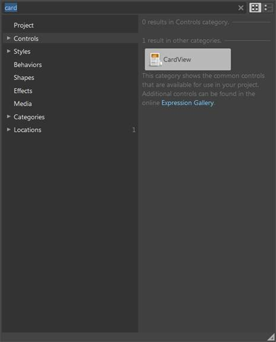
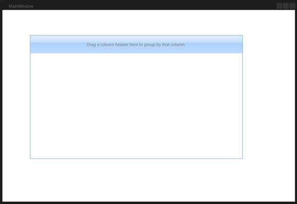
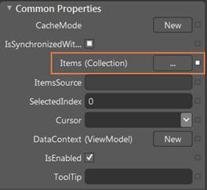
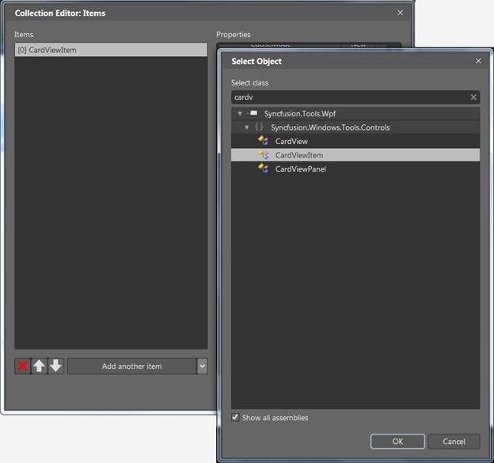

The CardView control can also be created and configured using Expression Blend. The following are the steps to do so.
1. Create a WPF project in Expression Blend and reference the following assemblies.
· Syncfusion.Shared.Wpf
· Syncfusion.Tools.Wpf
· Syncfusion.Core
2. Search for CardView in the Toolbox.

Figure 91: CardView in Expression Blend Toolbox
3. Drag the CardView to the designer. This will generate the following CardView control.

Figure 92: Dragging CardView to the Expression Blend Designer
4. To add the items to the CardView using the CollectionEditor, select the CardView and go to Properties area, and then click Items (Collection) under Common Properties.

Figure 93: CardView Properties
5. Once the Collection Editor opens, click Add Another Item. The Select Object window will open.
6. Select the CardViewItem by typing CardViewItem in the search box, and then click OK.

Figure 94: Collection Editor for CardView in Expression Blend
7. Configure the CardViewItem using the properties in the Collection Editor.
 Note: You can also customize the appearance of
CardView control and its items using the template editing feature available in
the Expression Blend.
Note: You can also customize the appearance of
CardView control and its items using the template editing feature available in
the Expression Blend.